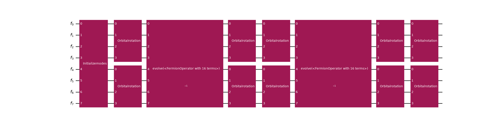
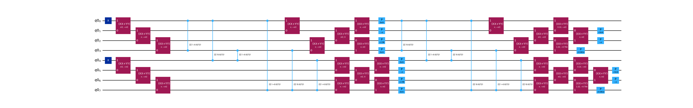
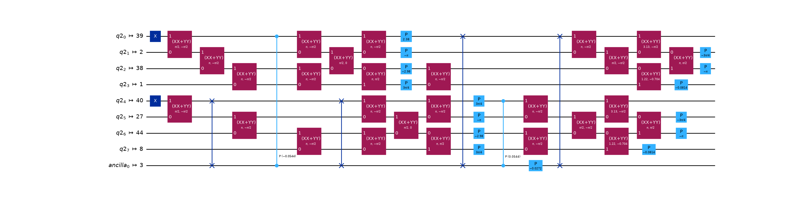

Transpile an LUCJ ansatz¶
Important
The concepts in this guide are only available in the Python API.
The local unitary cluster Jastrow (LUCJ) ansatz is a compact, hardware-efficient parametrization of a correlated electronic wavefunction. It is a member of the more general unitary cluster Jastrow (UCJ) family and takes the form
where \(\lvert \Phi_0 \rangle\) is a reference state (typically Hartree-Fock), each \(\mathcal{U}_k\) is an orbital rotation, and each \(\mathcal{J}_k\) is a diagonal Coulomb operator
with \(n_{i\sigma}\) the number operator on spatial orbital \(i\) with spin \(\sigma\).
ffsim builds the ansatz operator; this package turns it into a circuit and lowers that circuit
onto qubits. This guide is about the second half of that sentence. The reason to make the trip is the
lowering itself: ffsim’s own Qiskit gates are specific to the Jordan-Wigner transformation, whereas a
FermionicCircuit carries no assumption about its fermion-to-qubit encoding, so the same
ansatz can be synthesized through whichever encoding suits the target device.
The ansatz operator therefore arrives here ready-made, and everything below is what happens to it afterwards: what the gate decomposes into, how it lowers through Jordan-Wigner, how it is matched to a device coupling map, and what a non-Jordan-Wigner lowering would still need. For building, parametrizing, or simulating a UCJ ansatz in the first place, see ffsim’s own guides.
See also
The ffsim relationship guide for how the two packages divide the work, and the transpilation guide for the pipeline stages used below.
1. Get an LUCJ operator from ffsim¶
The ansatz is initialized from the amplitudes of a coupled-cluster singles and doubles (CCSD)
calculation. Run restricted Hartree-Fock followed by CCSD for a hydrogen molecule in the 6-31g
basis, using PySCF for the quantum chemistry, then hand the amplitudes to
ffsim’s from_t_amplitudes(). It performs a double
factorization of the \(t_2\) amplitudes to obtain the per-layer diagonal Coulomb matrices and
orbital rotations, and derives an optional final orbital rotation from the \(t_1\) amplitudes.
The number of repetitions \(L\) is whatever that factorization yields; n_reps truncates it,
trading accuracy for a shallower circuit.
>>> import ffsim
>>> import pyscf
>>> import pyscf.cc
>>>
>>> # build the molecule and run Hartree-Fock
>>> mol = pyscf.gto.Mole()
>>> mol.build(
... atom=[["H", (0, 0, 0)], ["H", (0, 0, 0.74)]],
... basis="6-31g",
... symmetry="Dooh",
... verbose=0,
... )
<pyscf.gto.mole.Mole object at ...>
>>> scf = pyscf.scf.RHF(mol).run()
>>>
>>> norb = scf.mo_coeff.shape[1]
>>> nelec = (mol.nelec[0], mol.nelec[1])
>>>
>>> # run CCSD for the t-amplitudes, then factorize them into an ansatz operator
>>> ccsd = pyscf.cc.CCSD(scf).run()
>>> t1, t2 = ccsd.t1, ccsd.t2
>>>
>>> ucj_op = ffsim.UCJOpSpinBalanced.from_t_amplitudes(t2, t1=t1, n_reps=2)
This is where the ansatz stops being an ffsim concern. ffsim offers choices here that this package
neither sees nor needs to know about, such as the variationally optimized (“compressed”)
factorization behind optimize=True, or the parameter-vector packing that a variational optimizer
drives. All of them produce the same kind of operator, and everything below works unchanged on any of
them.
2. Turn the operator into a fermionic circuit¶
The UCJ gate wraps the operator and expresses it as a circuit over fermionic modes. The
gate is a pure unitary carrying no reference of its own, so prepend an InitializeModes gate
(built with from_hartree_fock()) to supply the
Hartree-Fock reference the ansatz is applied to.
>>> from qiskit_fermions.circuit import FermionicCircuit
>>> from qiskit_fermions.circuit.library import InitializeModes, UCJ
>>>
>>> ansatz = UCJ(ucj_op)
>>>
>>> circuit = FermionicCircuit(2 * norb)
>>> circuit.append(InitializeModes.from_hartree_fock(norb, nelec), circuit.modes)
>>> circuit.append(ansatz, circuit.modes)
Decomposing the circuit reveals its anatomy, and this is the representation the rest of the guide
operates on. The InitializeModes gate prepares the reference determinant, and each ansatz
layer contributes an OrbitalRotation \(\mathcal{U}_k^\dagger\), then
\(e^{i\mathcal{J}_k}\) (an Evolution of the diagonal Coulomb operator
\(\mathcal{J}_k\)), then \(\mathcal{U}_k\), with a final OrbitalRotation at the
end. The orbital rotations act per spin sector, so each is placed on the alpha modes 0..norb and
the beta modes norb..2*norb independently.
>>> circuit.decompose().draw("mpl", fold=-1)
<Figure size ... with 1 Axes>
{kind=link}
{kind=link}

Every gate in that decomposition is still fermionic: OrbitalRotation and
Evolution are defined on modes, and no qubit or Pauli operator has appeared yet. That is
what leaves the encoding open, and it is the state the ansatz stays in until the synthesis stage
picks one.
Note
Each layer ends with \(\mathcal{U}_k\) and the next begins with
\(\mathcal{U}_{k+1}^\dagger\), so adjacent OrbitalRotation gates could be merged
into a single rotation. A transpilation pass performing this fusion is a planned future
development.
3. Choose a fermion-to-qubit encoding¶
The circuit is still fermionic, and that is the point at which this package earns its place in the
workflow. A FermionicCircuit carries no assumption about how modes become qubits, so the
encoding is a synthesis-stage choice rather than something baked into the ansatz. That is what
this package adds over ffsim’s own Qiskit gates, which are specific to the Jordan-Wigner
transformation.
For Jordan-Wigner alone you would not need this detour: ffsim ships
UCJOpSpinBalancedJW and its siblings, which take a UCJ operator to a
qubit circuit on their own. The reason to route the ansatz through a fermionic circuit is everything
else an encoding can buy you. Local encodings, for instance, spend extra qubits to bound the Pauli
weight of each term, which the 1D and 2D
flow-set guides use to make a Trotter step’s two-qubit depth independent of the system size.
For a UCJ ansatz specifically, two pieces are needed to take that other path, and only the first exists today:
The diagonal Coulomb evolution.
Evolutionis already encoding-agnostic:MapperFnEvolutionSynthesistakes a mapper function, so the \(e^{i \mathcal{J}_k}\) layers lower through any encoding you can express as one. The flow-set guides show how to write one.The orbital rotations.
GivensDecompositionOrbitalRotationSynthesisemitsXXPlusYYGateobjects directly on qubit pairs, which is a Jordan-Wigner-specific lowering. A different encoding needs its ownOrbitalRotationsynthesis plugin, and none ships yet.
So UCJ under a non-Jordan-Wigner encoding is an open direction rather than a worked recipe, and one this workflow is meant to enable. Expect this to firm up as further encodings land in the mapper library.
4. Lower it through Jordan-Wigner¶
The rest of this guide takes the encoding that ships as a preset, which is also the simplest one to
follow. generate_preset_jw_pass_manager() builds a staged
pipeline that maps the fermionic circuit through the Jordan-Wigner transformation and synthesizes
each gate into a qubit-level circuit. The composite UCJ gate must first be
decomposed into its primitive gates (OrbitalRotation, Evolution, …) so the
pipeline’s optimization stage can act on them, so pass circuit.decompose().
>>> from qiskit_fermions.transpiler.presets import generate_preset_jw_pass_manager
>>>
>>> pm = generate_preset_jw_pass_manager()
>>> transpiled = pm.run(circuit.decompose())
>>> print(dict(sorted(transpiled.count_ops().items())))
{'p': 14, 'rzz': 12, 'x': 2, 'xx_plus_yy': 28}
Without a target device, this maps onto 2 * norb qubits with all-to-all connectivity assumed; the
orbital rotations synthesize into XXPlusYYGateobjects and the diagonal
Coulomb evolutions into RZZGateobjects:
>>> transpiled.draw("mpl", fold=-1)
<Figure size ... with 1 Axes>
{kind=link}
{kind=link}

5. Match the device topology¶
A real device has a restricted qubit coupling map, and the LUCJ ansatz is designed to match it. The
same-spin (pairs_aa) interactions form two linear chains and the alpha-beta (pairs_ab)
interactions bridge them. ffsim’s generate_lucj_pass_manager() builds a
device-aware qubit pipeline for this structure, and returns the subset of pairs_ab the
hardware can actually accommodate. Slot that pipeline into the preset’s qubit stage while
keeping the package’s own fermion-to-qubit synthesis:
>>> from ffsim.qiskit import generate_lucj_pass_manager
>>> from qiskit.providers.fake_provider import GenericBackendV2
>>> from qiskit.transpiler import CouplingMap
>>>
>>> # a heavy-hex device coupling map (any BackendV2 works, e.g. a real fake_provider backend)
>>> coupling_map = CouplingMap.from_heavy_hex(5)
>>> backend = GenericBackendV2(
... num_qubits=coupling_map.size(),
... basis_gates=["cp", "xx_plus_yy", "p", "x", "swap"],
... coupling_map=coupling_map,
... )
>>>
>>> # nearest-neighbor same-spin chain; let the pass manager choose the alpha-beta pairs
>>> pairs_aa = [(p, p + 1) for p in range(norb - 1)]
>>>
>>> pm = generate_preset_jw_pass_manager()
>>> pm.qubit, allowed_pairs_ab = generate_lucj_pass_manager(
... backend, norb, "heavy-hex", (pairs_aa, None), optimization_level=3, seed_transpiler=0
... )
>>>
>>> # the alpha-beta interactions the heavy-hex connectivity can implement
>>> print(allowed_pairs_ab)
[(0, 0)]
That composition is the point: the qubit stage is device-aware, while the fermion-to-qubit
synthesis stage ahead of it stays this package’s own, and so stays replaceable.
With pm.qubit now set to the device-aware pipeline, running the pass manager lays the circuit out
on the backend’s qubits and routes it to the coupling map. For the unrestricted ansatz from
step 1, whose diagonal Coulomb operator still contains alpha-beta terms the hardware cannot reach
directly, the router must insert many SWAP gates to bridge them:
>>> naive = pm.run(circuit.decompose())
>>> naive.num_qubits # laid out on the full heavy-hex device register
57
>>> naive_swaps = naive.count_ops()["swap"]
>>> naive_swaps # many SWAPs to bridge the unreachable alpha-beta interactions
33
Restrict the ansatz to the hardware-implementable interactions
The fix is to feed allowed_pairs_ab back into the ansatz construction, through the
interaction_pairs argument of
from_t_amplitudes(), so the diagonal Coulomb operator only
contains alpha-beta terms the coupling map can implement directly. The ansatz then matches the
device topology and the router barely has to touch it:
>>> restricted = UCJ(
... ffsim.UCJOpSpinBalanced.from_t_amplitudes(
... t2, t1=t1, n_reps=2, interaction_pairs=(pairs_aa, allowed_pairs_ab)
... )
... )
>>>
>>> circuit = FermionicCircuit(2 * norb)
>>> circuit.append(InitializeModes.from_hartree_fock(norb, nelec), circuit.modes)
>>> circuit.append(restricted, circuit.modes)
>>>
>>> transpiled = pm.run(circuit.decompose())
>>> restricted_swaps = transpiled.count_ops()["swap"]
>>> restricted_swaps # far fewer routing SWAPs than the unrestricted ansatz
4
Drawing only the active qubits (idle_wires=False) shows the circuit restricted to the two spin
chains and the alpha-beta bridge, expressed in the device basis gates. Layout and routing scatter the
logical modes across the device’s physical qubits, so pass a wire_order taken from the
circuit’s final layout (final_index_layout() lists the
physical qubit each input qubit ended on, in input-qubit order) to draw the wires back in the
original mode order:
>>> wire_order = transpiled.layout.final_index_layout(filter_ancillas=False)
>>> transpiled.draw("mpl", idle_wires=False, fold=-1, wire_order=wire_order)
<Figure size ... with 1 Axes>
{kind=link}
{kind=link}

Note
The exact post-layout gate counts and depth depend on the routing/optimization passes and the
chosen device, so they are not reproduced here. The key point is the co-design; expressing the
ansatz with a nearest-neighbor pairs_aa chain and hardware-filtered pairs_ab bridges keeps
the synthesized circuit close to the device topology, minimizing the routing overhead (inserted
SWAP gates). See GivensDecompositionSlaterDeterminantSynthesis for a related
synthesis choice (minimize_2q_gate_count), trading two-qubit gate count against routed depth.
Next steps¶
Learn how the individual gates work in the
qiskit_fermions.circuit.librarydocumentation and the fermionic circuit guide.Explore the operators explanation guide to understand how to construct fermionic operators and Hamiltonians directly.
See how a fermionic circuit is mapped to qubits in the transpilation guide.
Read the ffsim relationship guide to understand how the two packages divide the work, and which protocols let ffsim simulate this package’s circuits.